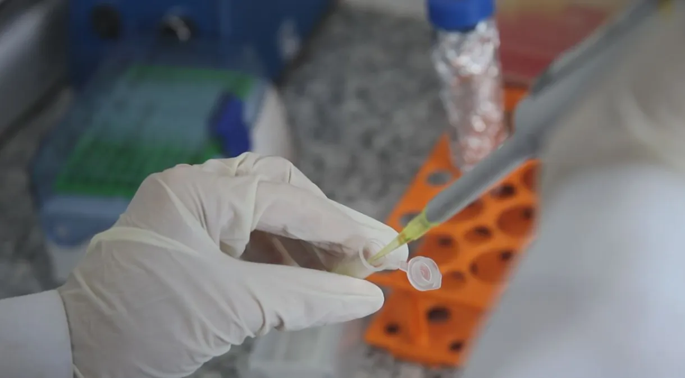
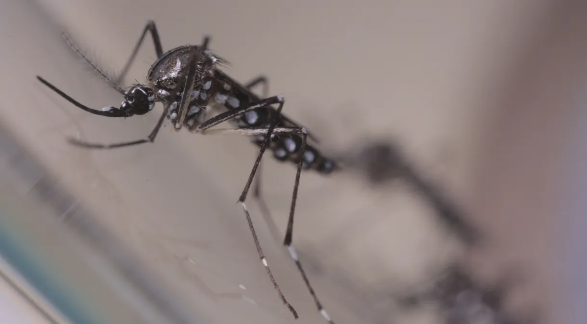
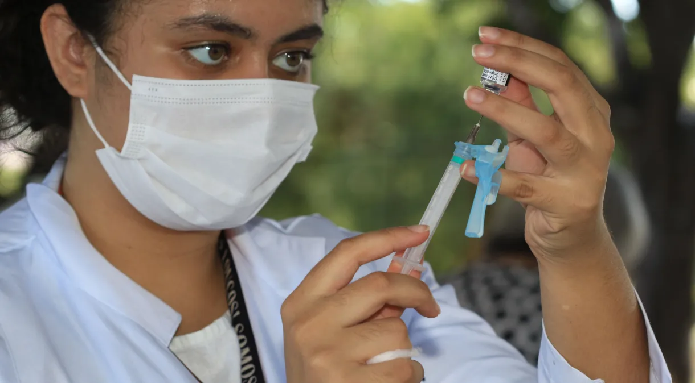

Última cartada da década, teste de vacina contra HIV é interrompido após resultados ruins
Embora as novas infecções por HIV tenham diminuído drasticamente desde o seu pico, na década de 1990, 39 milhões de pessoas vivem atualmente com a infecção
Leia mais
Como proteger a pele de queimaduras do sol? Veja dicas para evitar danos
Algumas medidas são importantes para evitar problemas como envelhecimento cutâneo e até câncer de pele.
Leia mais

Minas Gerais e Espírito Santo têm alerta para epidemia de dengue em 2024, diz Saúde
Brasil registrou aumento de 15,8% nos casos de dengue em 2023
Leia mais

Com novas variantes, reforço da vacina contra a Covid é necessário, diz infectologista
À CNN Rádio, Luana Araújo alertou que o coronavírus continuará sendo assunto “por um bom tempo”
Leia mais
Memória muscular: saiba quanto tempo o corpo leva para esquecer o treino
Entenda o motivo que faz a volta ao treino demorar mais do que você gostaria para conseguir levantar os mesmos pesos
Leia mais
Alzheimer: Estimulação elétrica pode melhorar função cognitiva, diz estudo
Tecnologia, conhecida como ETCC, pode ajudar a estimular a plasticidade do cérebro
Leia mais